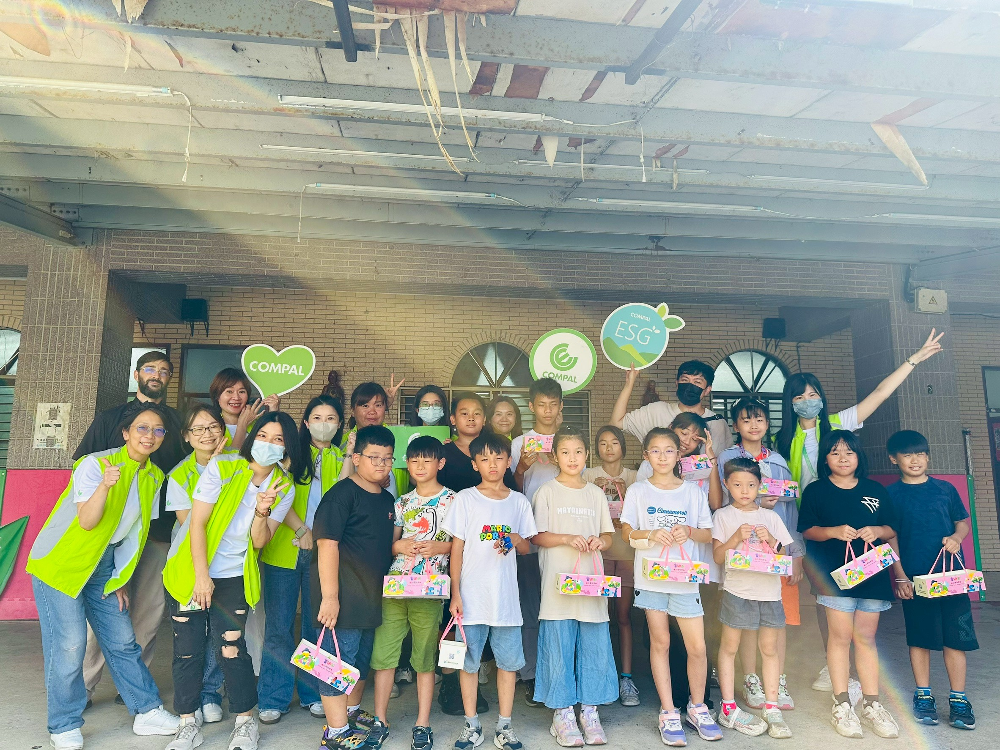
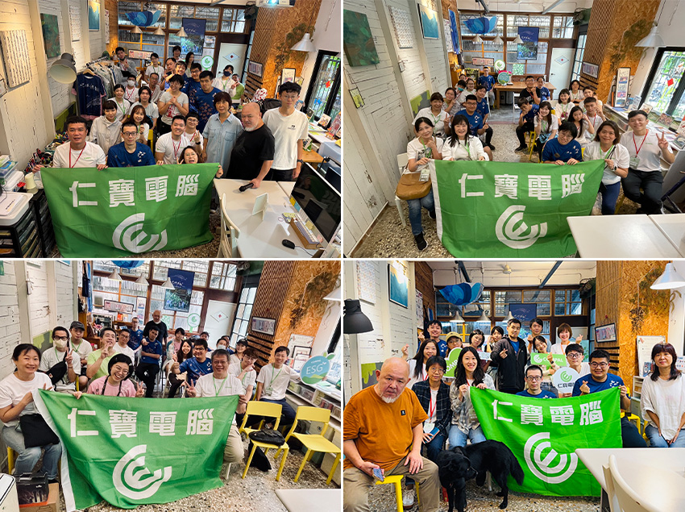
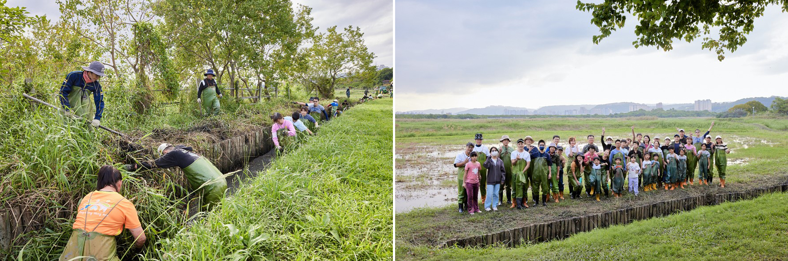
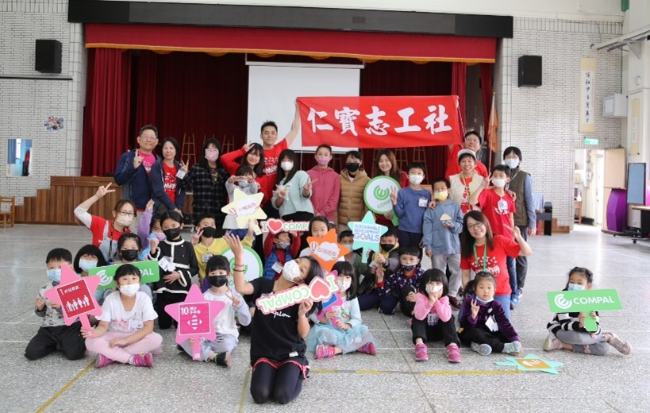
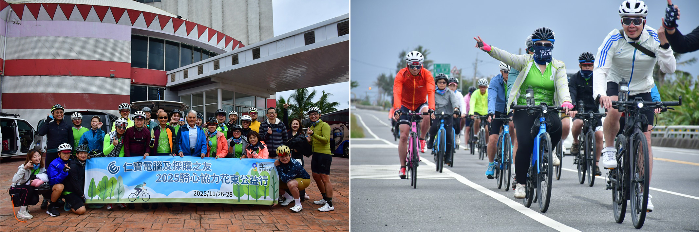

揮別2025年的世事多變，仁寶電腦ESG的推動隨著時間與世界接軌前行。 滿懷「好運馬上來」的期待，一起朝向2026年的新目標前進。
 |
仁寶同仁們是最有愛心和實踐力的夥伴！ 這不是說個故事，而是每一年我們一起實際在做的事。 因為有大家一起分享愛，讓有需要的孩子感受到溫暖，他們的世界多了些期待。 當你身處黑暗中，遠處天際微微星光都會成為鼓起勇氣前進的力量。
為了保護弱勢兒童們，同仁們無從得知受幫助對象們的實際生活地區，無法知曉孩子們的真實姓名和相貌 (或請同仁不對外公開)。謝謝每一年夥伴們仍願意力有所及地去幫助需要的人，參與「解憂雜貨店」與孩子們交換書信。
謝謝14年來仁寶同仁默默支持許潮英基金會不定期的募集需求，長期協助推動的「圓夢飛翔計劃」，同仁們9年不間斷地認助「兒童節圓夢心願禮物」。 2025年535位同仁參與年終募款捐贈NT$1,717,000元，幫助基金會長期照顧的弱勢家庭與孩子們都能好好過年、馬上有福。
 |
仁寶同仁們持續第5年「中秋送月餅」是每一年拿到月餅的孩子們的喜悅。在單親貧困家庭長大的小雄（化名），開心可以拿月餅回家，與臥病在床的爸爸分享。仁寶「袋鼠計劃」社區課輔班的小朋友開心能親手收到大哥哥、大姐姐的中秋禮物；去肯納園協助裝箱月餅的仁寶志工們，更是給予肯納青年和家長們一起合作的感動。
 |
2025 年仁寶有 56 位同仁使用有薪志工假去多寶學堂協助整理修繕與粉刷，用心傾聽、用眼觀賞、進入泛自閉症的多寶藝術青年們工作空間，關懷社區文化、實踐多元共融的社會。 「2025你捐款 仁寶奉好茶行動」116位仁寶同仁捐款NT$133,000元，支持多寶學堂「生命的樣子-安身立命」紀錄片的拍攝。
我們鼓勵同仁們用行動支持需要幫助的人，仁寶電腦每一年也一樣捐款支持推動優質教育、環境公益與志工服務的行動。
 |
仁寶長期推動資訊教育，重視學童城鄉學習差距，自2005年教育部推動計畫起就積極響應。從推動「仁寶數位公益—資訊素養暨社區/偏鄉行動圖書閱讀」計畫開始，至2025年累計21年已捐贈超過八千台Notebook、平板或iPad。仁寶每年持續捐贈數位裝置給有需要學校、偏鄉社區或數位機會中心（DOC），幫助學童與社區居民運用學習、培養AI素養，以實踐自己的夢想並與世界科技接軌。 💖第27年與北區陽光基金會合作，提供「仁寶陽光獎助學金」 💖第18年仁寶「閱讀志工服務計劃」支持大學學生社團推動SDGs 💖第7年與輔大偏鄉中心公益合作「帶著你長大-袋鼠計劃」實體課輔班 💖第7年支持多寶學堂的多寶青年發揮天賦所長、走向自立自強的道路 💖第6年與高雄市立圖書館合作偏鄉多元閱讀公益 💖第6年保護溼地、推動環境教育行動 💖第5年贊助支持內科社區「台北科技盃愛地球」公益路跑 💖第2年贊助高師大特殊教育中心「仁寶挺科學-普特學生科學特攻隊」 💖第1年贊助保護水資源、重視生物多樣性，以行動守護翡翠水庫 感謝每一位願意分享愛心與陪伴與我們一同前行的各校師長們、社福團體的志工伙伴們。 是你嗎？
謝謝每一年一起參與各項捐款、捐物資、認助學童才藝學習金的公益活動，也願意奉獻自己的時間和家人們一起去保護環境、潔淨海灘、淨化溼地、鑽入溝渠中清除外來種。
 |
謝謝【仁寶志工社】夥伴們22年來利用自己的假日和許潮英基金會一起去服務需要的弱勢學童，感謝Hank林啟明社長、周淑真副社長和曾經參與志工社服務的所有夥伴們。
 |
謝謝徐文達資深副總、採購團隊與供應鏈夥伴們10年不中斷的【騎鐵馬送愛心】行動，仁寶三年來也一同捐款響應。
面對2050全球淨零碳排目標，仁寶電腦自1984年成立以來，研發主力發展筆記型電腦及智慧裝置產業產品、智慧科技。近年積極發展新興事業，雲端伺服器、車用電子、智慧醫療等事業與各領域產業共創品牌價值，以本身軟硬體結合的研發與製造優勢，開發相關解決方案。 დ2026年祝大家馬上成功│馬踏祥雲添瑞氣，駿業宏開展鴻圖。დ
邀請大家一起持續實踐「仁寶社會共好共融」的永續發展目標 重視自己的健康、發揮關懷心與幸福實踐力，共創「心幸福」的社會 因為有您一起 世界變得比較美好。
🕬 仁寶ESG FB粉絲頁連結 🕬 仁寶ESG永續網: 🕬 仁寶【仁芯綠動】公益平台: 🕬 仁寶 永續報告書: 社會關懷 – 影響力 | Compal ESG